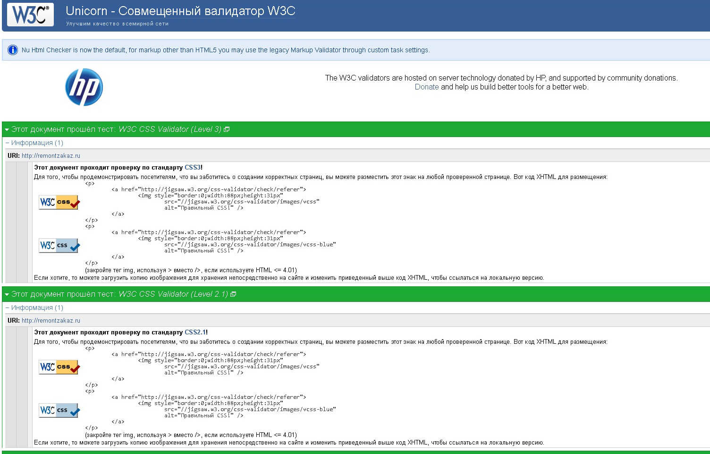

Что включает в себя верстка сайта
Основная задача верстальщика – переместить прототип в код, который будет в точности отображать проделанную работу дизайнера. Верстку можно сравнить с издательской деятельностью – книги, журналы и газеты содержат структурированную информацию, в них текст и графические материалы упорядочены таким образом, чтобы максимально облегчить читателю процесс потребления информации и заинтересовать его. Выделяется два типа разработчиков сайтов: Backend– занимается разработкой внутренней части сайта, программирует основной функционал; Frontend – занимается внешней частью сайта, настраивает отображение всех элементов, добавляет к ним анимацию и так далее. Верстка – это про Frontend, в основу которого входит язык разметки HTML, базис любого сайта.

Виды верстки
Раньше было принято разделять вёрстку сайта на адаптивную, кроссбраузерную, семантическую, доступную и прочие категории. Сейчас основные инструменты верстальщика — языки HTML и CSS — шагнули далеко вперёд, поэтому сайт сразу делают с учётом предпочтений пользователя и разных экранов, начиная с мобильного. Лучше сразу учитывать, как вёрстка страницы сайта будет смотреться на разных устройствах и в программах. Поэтому в чистом виде вёрстки сайтов только одного типа не бывает, она должна быть одновременно кроссбраузерной, кроссплатформенной, валидной и семантической.
Что такое валидная вёрстка сайта
Валидная вёрстка — это HTML-код, который написан по определённым стандартам. Их разработал Консорциум Всемирной Паутины — World Wide Web Consortium (W3C). Валидность — соответствие HTML-кода стандартам, которые позволяют сайту работать в разных браузерах и программах так, как было задумано. Валидность определяет, как на сайт будут реагировать поисковые системы и как его будут воспринимать пользователи. Проверить вёрстку сайта можно и вручную, и с помощью специальных сервисов или расширений в браузере. Например, с помощью сервиса Markup Validation Service, плагина Web Developer для Chrome или в валидаторе W3С. Чтобы проверить код в валидаторе W3C, нужно загрузить в сервис HTML-файл, фрагмент кода или вставить ссылку на сайт. Валидатор оценивает синтаксис, находит синтаксические ошибки и ошибки вложенности тегов, показывает структуру заголовков. Например, элементы можно вкладывать друг в друга по определённым правилам ― так внутрь списков можно вкладывать только специальные элементы списка. Валидаторы не ошибаются, и пренебрегать ими не стоит. Не все ошибки, подсвеченные валидатором, приводят к неправильному отображению элементов, но всё же следует их исправлять, потому что на это обращают внимание поисковики при ранжировании сайтов.
 Заказать